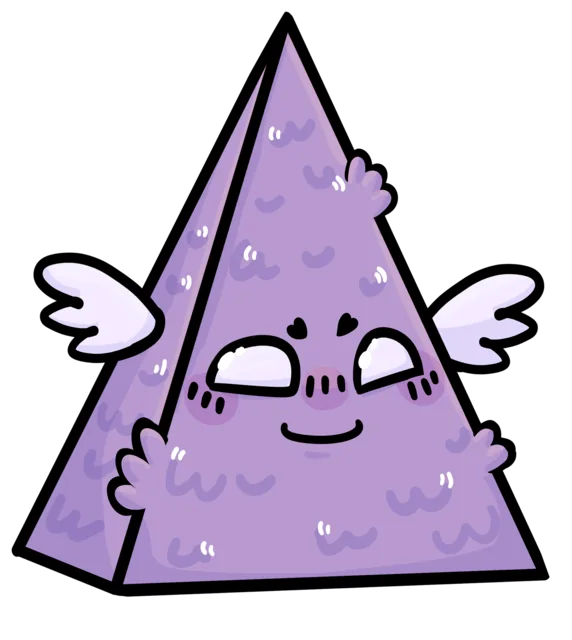
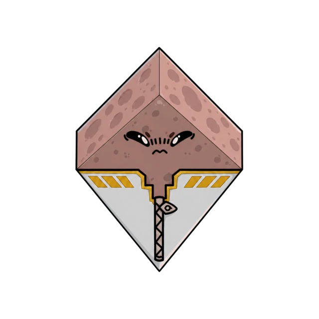
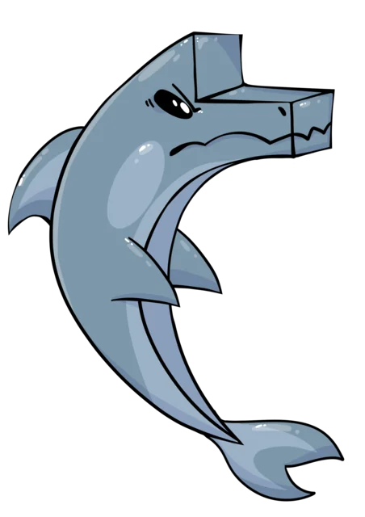

Ball is God?! Otočte věž. Staňte se dopadem.
Hardcore vertikální sestupová arkáda, kde horizontální brzda otáčí věž kolem padajícího Espa. Přeskočte bezpečná přistání, nabijte kombo smeč a prolomte mýtický svět, kde jeden nestřežený zásah ukončí běh.
Aktivní výroba: deset scén lokací, bossové, větvené dialogy a cesty karmy, které mění pravidla hry.
Otočtepřetáhněte věž kolem Espa
Rizikopřeskočte tři bezpečná přistání
Úderprolomte platformu
Uvnitř aktuálního sestavení
Karma se mění více než dialog.
Světlá, neutrální a temná cesta karmy mění chování štítu, varovné signály, agresivitu nepřátel i fáze bossů, takže příběh mění to, jak hrajete.
Stav sestavení Aktivní výrobaVšech deset dialogových světů
Pozadí dialogů pro všech deset světů v pořadí sestupu od Ena po Deka.


Aktuální produkční uživatelské rozhraní
Výběr úrovně, dialogy a obrazovky s výsledky v aktuální verzi.
Takto vypadá aktuální průběh v pořadí, v jakém ho potkáte: výběr úrovně, dialog, klíčová volba a poté obrazovka vítězství nebo samostatná obrazovka porážky. Každý obrázek níže používá grafiku z produkčního projektu v Unity.
Nebeská trasa vybírá generované úrovně v deseti kapitolách o 100 úrovních.
Nabídka produkce mapuje deset míst ve 100 úrovních kapitol a otevírá se přímo do vybraného běhu.

 201
201Dialog probíhá přímo v lokaci.
Portrét postavy, výtvarné zpracování lokace a jmenovka mluvčího sdílejí jeden svislý rámec.


Shash
Pokračujte tedy - ale nemyslete si, že to bude snadné. Čekají na vás Trials, díky kterým bude vše předchozí vypadat jako pouhá maličkost.
04 / Klíčová volba
Odpověď se stává součástí sestupu.
Na místních úrovních 90 a 100 požádá vyhrazená porota o rozhodnutí o náhradě nebo o zabití, než dialog vyřeší běh.

Ušetřit
Zabít
05 / Nabídky výsledků
Vítězství vede dál. Porážka vrací ke stejné výzvě.
Aktuální sestavení má dva samostatné stavy výsledků: PanelWin nabízí opakované přehrávání a další úroveň, zatímco PanelOver zachovává jednu nezaměnitelnou akci přehrávání.
Vítězství · PanelWin
Sestup dokončen
 Přehrát znovu
Další
Přehrát znovu
Další
Přehrát znovu
Další
Postavy v dialozích
Na cestě dolů se tváře setkaly.
Všech 25 znaků s platnými produkčními dvojicemi otevřených a uzavřených portrétů je zahrnuto níže. Chcete-li přepnout výraz, umístěte kurzor na kartu nebo na ni zaostřete.











Přehled hry
Ball is God?! je hardcore arkádová hra o pádu otáčející se věží.
Nápad
Veďte Espa dolů božskou věží. Jediná chyba může ukončit hru a vaše zásadní volby mění to, jak se svět hraje.
Aktuální sestavení
Je implementováno deset lokačních scén, procedurální generování věží, kombo rozbití, swipe shield, konfigurace bossů, větvený dialog, produkční menu a portréty připravené na výraz.
Cílová skupina
Hráči, kteří mají rádi náročné mobilní arkády, načasování na hraně rizika a odměny a bossy, s příběhem, který stojí za sledování.
Stav
Aktivní výroba. Poslední práce zahrnují herní systémy, výtvarnou stránku světů, testování a to, jak se hra hraje na telefonu.
Vlastnosti
Co děláte v Ball is God?!
Sestup s otáčením tažením
Horizontální brzda otáčí věž kolem automaticky padajícího Espa, seřazuje mezery, nebezpečí a bezpečné plošiny.
Hardcore arkádový tlak
Jeden nekrytý zásah ukončí hru, takže musíte číst věž a načasovat každý pohyb.
Bossové a mýtické světy
Deset scén lokací, každá s vlastními bossy, nese příběh z jednoho světa do dalšího.
Volby, které mění pravidla
Dialog s milosrdností, silou a změnou karmy, pravidla štítů, nepřátelská agrese, telegrafy a fáze bossů.
Herní smyčka
Jak hrát Ball is God?!
- Krok 01Přečtěte sestup
Prohlížejte si další plošiny, mezery a nebezpečí a hledejte bezpečná okna pro načasování, když padáte.
- Krok 02Otočte věž
Horizontální brzda otáčí svět kolem Espa a vyrovná bezpečnou platformu nebo záměrnou mezeru.
- Krok 03Riskujte a rozbijte
Přeskočte tři platformy a nabijte kombo smeč, pak prolomte struktury, zatímco štít zakryje jednu smrtelnou chybu.
- Krok 04Vyberte důsledek
Milosrdenství a síla utvářejí karmu, dialog a pravidla hry přenesené do nepřátel a bossů.
Příběh / svět
Mýtická věž, ve které vaše volby sestupují společně s vámi.
Ball is God?! začal v dětství fascinací mobilními arkádami s vertikálním sestupem: čtecí mezery, rychlé reakce a přežívání díky instinktu.
Tento formát unesl víc: bossy, postavy s osobností, příběh a morální napětí. Současný projekt provází Espa deseti scénami lokací a skupinou podivných postav a volby mění jak příběh, tak hru.
Cílem se tedy stala jednoduchá vertikální sestupová arkáda s tlakem souboje s bossem a důsledky příběhového RPG.
- Vize
- Arkáda s otáčející se věží a mýtickým příběhem
- Současný světový rozsah
- Deset lokací a konfigurací bossů
- Fáze příběhu
- Kompletní návrh dlouhého příběhu
- Stav výroby
- Aktivní výroba
Ve zkratce
Jednoduché ovládání tažením a příběh, který mění pravidla.
Ovládání tažením pro otáčení je okamžité. Zbytek obstarají mýtické světy, bossové a volby, které mění hru.
Aktuální verze už spojuje deterministické generování věže, údery na hraně rizika a odměny, selhání po jednom zásahu, bossy, větvené dialogy a karmu, která mění hratelnost.
- Žánr
- Příběhová arkáda s vertikálním sestupem
- Cílová platforma
- iOS / Android
- Formát relace
- Rychlá kola založená na dovednostech
- Studio
- WillowinWorlds
Stáhnout materiály
Tisková a tvůrčí díla Ball is God?!
Náhledy WebP pro zpravodajství, posouzení vydavateli a odkazy na stránkách obchodů. Zdrojové soubory v plném rozlišení jsou k dispozici na vyžádání.
Značka a postavy
Ikona hry plus všech 25 současných postav, které mají kompletní portréty produkčních dialogů. Názvy odpovídají lokalizačním klíčům Unity.
EspaPortrét hráčské postavy.
RevlaPortrét produkčního dialogu.
ShashPortrét produkčního dialogu.
ShushPortrét produkčního dialogu.
ShishPortrét produkčního dialogu.
GigoPortrét produkčního dialogu.
GogaPortrét produkčního dialogu.
GigaPortrét produkčního dialogu.
AskoldPortrét produkčního dialogu.
MirasPortrét produkčního dialogu.
HihPortrét produkčního dialogu.
HehPortrét produkčního dialogu.
HahPortrét produkčního dialogu.
MusyaPortrét produkčního dialogu.
DusyaPortrét produkčního dialogu.
SusyaPortrét produkčního dialogu.
VladusPortrét produkčního dialogu.
FrishaPortrét produkčního dialogu.
LurenPortrét produkčního dialogu.
KurenPortrét produkčního dialogu.
Don YagonPortrét produkčního dialogu.
LuryaPortrét produkčního dialogu.
KhleyaPortrét produkčního dialogu.
VaronPortrét produkčního dialogu.
WhitePortrét produkčního dialogu.
Pozadí menu
Aktuální produkční umělecká díla používaná nebeským systémem pro výběr úrovní.
 Nebeské menu
Nebeské menuVertikální sestupové světy
Kompletní sada deseti pozadí aktuální polohy, seřazená od Ena do Deka.
 01 · Svět nebePozadí vertikálního sestupu Ena.
01 · Svět nebePozadí vertikálního sestupu Ena.
 02 · Vesmírný světPozadí vertikálního sestupu Dyo.
02 · Vesmírný světPozadí vertikálního sestupu Dyo.
 03 · Bouřkový světPozadí vertikálního sestupu Tria.
03 · Bouřkový světPozadí vertikálního sestupu Tria.
 04 · Sněhový světPozadí vertikálního sestupu Tessera.
04 · Sněhový světPozadí vertikálního sestupu Tessera.
 05 · Sopečný světPozadí Pente; ve hře animované.
05 · Sopečný světPozadí Pente; ve hře animované.
 06 · Oceánský světPozadí vertikálního sestupu Eksi.
06 · Oceánský světPozadí vertikálního sestupu Eksi.
 07 · Pouštní světPozadí vertikálního sestupu Epta.
07 · Pouštní světPozadí vertikálního sestupu Epta.
 08 · Lesní světPozadí vertikálního sestupu Ohto.
08 · Lesní světPozadí vertikálního sestupu Ohto.
 09 · Jeskynní světPozadí vertikálního sestupu Ennea.
09 · Jeskynní světPozadí vertikálního sestupu Ennea.
 10 · Pekelný světPozadí vertikálního sestupu Deka.
10 · Pekelný světPozadí vertikálního sestupu Deka.
Pozadí příběhové arkády
Kompletní sada dialogů a umístění: Síň světla plus pozadí pro všech deset světů.
 00 · Síň světlaPozadí úvodního dialogu.
00 · Síň světlaPozadí úvodního dialogu.
 01 · Nebeský dialogPozadí příběhu Ena.
01 · Nebeský dialogPozadí příběhu Ena.
 02 · Vesmírný dialogPozadí příběhu Dyo.
02 · Vesmírný dialogPozadí příběhu Dyo.
 03 · Bouřkový dialogPozadí příběhu Tria.
03 · Bouřkový dialogPozadí příběhu Tria.
 04 · Sněhový dialogPozadí příběhu Tessera.
04 · Sněhový dialogPozadí příběhu Tessera.
 05 · Sopečný dialogPozadí příběhu Pente.
05 · Sopečný dialogPozadí příběhu Pente.
 06 · Oceánský dialogPozadí příběhu Eksi.
06 · Oceánský dialogPozadí příběhu Eksi.
 07 · Pouštní dialogPozadí příběhu Epta.
07 · Pouštní dialogPozadí příběhu Epta.
 08 · Lesní dialogPozadí příběhu Ohto.
08 · Lesní dialogPozadí příběhu Ohto.
 09 · Jeskynní dialogPozadí příběhu Ennea.
09 · Jeskynní dialogPozadí příběhu Ennea.
 10 · Pekelný dialogPozadí příběhu Deka.
10 · Pekelný dialogPozadí příběhu Deka.
Ball is God?! FAQ
Časté dotazy k Ball is God?!
Jaký druh hry je Ball is God?!
Hardcore vertikální sestupová arkáda. Otáčíte věží kolem padajícího Espa, přeskakujete bezpečná přistání, abyste nabili údery, a prorážíte si cestu mýtickými světy.
Jak se hraje Ball is God?!
Tažením vodorovně otočte věž, přeskočte tři platformy a nabijte smeč a přejeďte svisle, když musí cooldown štít absorbovat smrtící zásah.
Vyšla už hra Ball is God?!
Zatím ne. Je v aktivní výrobě: herní systémy, výtvarná stránka světů, příběhový obsah a testování. Datum vydání zatím není veřejné. Cílové platformy jsou iOS a Android.
Čím se liší Ball is God?!
Spojuje arkádový tlak rizika a odměny s deseti lokacemi a karmou, která mění dialogy, nepřátele, varovné signály, štíty i bossy.
Kdo vyrábí Ball is God?!
WillowinWorlds, nezávislé studio vyrábějící mobilní puzzle a arkádové hry.
Mohu použít tiskové materiály k Ball is God?!
Ano, pro média, posouzení vydavateli a odkazy v obchodech. Zdrojové soubory zůstávají soukromé, pokud o ně nepožádáte.
Devlog Ball is God?!
Co se změnilo a kdy
- Světové povrchy a validace nebezpečí
Prezentace postav, deterministické generování a nebezpečí v podobě trnů prošly společnou vizuální kontrolou a validací.
- červenec 2026Úprava UI a postav
Výběr úrovně, společné ovládací prvky akcí, svislé rámování dialogů a párové výrazy postav jsou nyní hotové.
- únor 2026Kontrola rozsahu projektu
Tým dokončil hlavní integraci příběhu a zkontroloval celý rozsah projektu: deset světů, morální volby, bossové a mnohonásobné konce.
- duben až květen 2025Přepsání příběhu a schopnosti
Celý příběh byl přepsán, schopnosti postav byly vylepšeny a morální důsledky byly jasnější.
- srpen 2024Směr příběhu začíná
Tým se rozhodl, že Ball is God?! má být víc než jednoduchá sestupová arkáda, a přidal mýtický příběh a vizi morálních voleb.
- červenec 2024Originální koncept
Projekt začal jako první herní nápad studia: rychlá vertikální arkáda o pádu božskou věží.
- Aktuální sestaveníArkáda a příběh v jedné verzi
Sestup po otáčející se věži, kombo úder, štít ovládaný tažením, bossové, dialogy i karma teď fungují společně v jedné verzi.